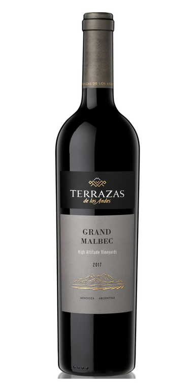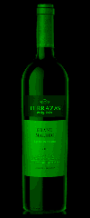PHOTO · W0Red / ArgentinaGrand Malbec – Terrazas de los AndesReference detailsSource: reviewed local photo archiveRepresentative release. Visible label years do not assign a vintage to your Winebrary. Physical height unverified.
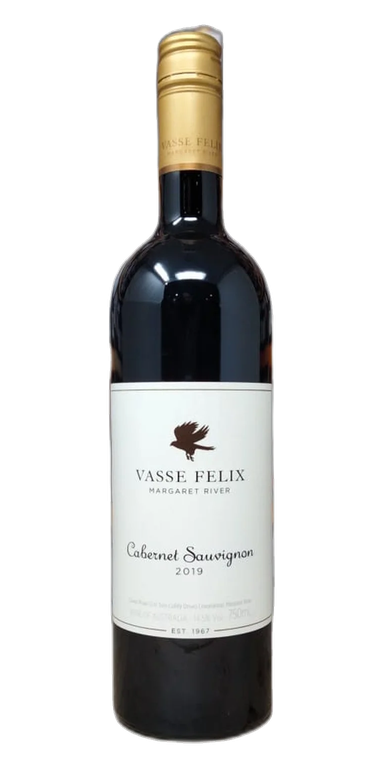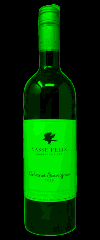PHOTO · W1Red / AustraliaCabernet Sauvignon – Vasse FelixReference detailsSource: reviewed local photo archiveRepresentative release. Visible label years do not assign a vintage to your Winebrary. Physical height unverified.
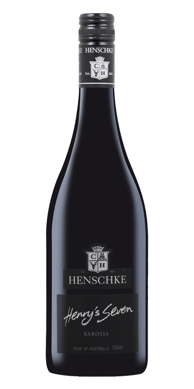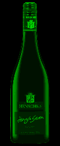PHOTO · W2Red / AustraliaHenry’s Seven – HenschkeReference detailsSource: reviewed local photo archiveRepresentative release. Visible label years do not assign a vintage to your Winebrary. Physical height unverified.
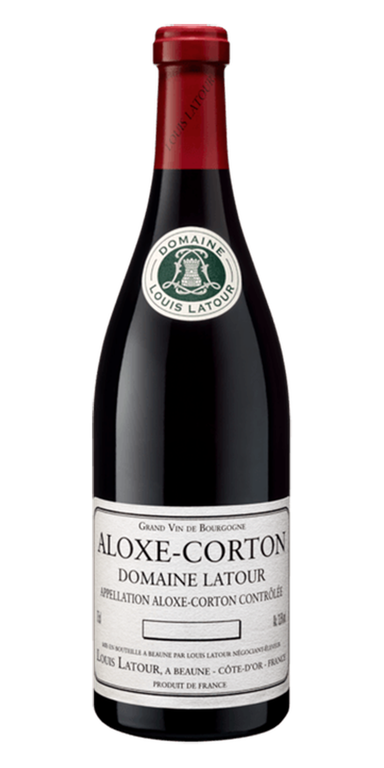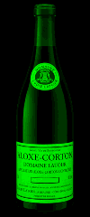PHOTO · W3Red / FranceAloxe-Corton – Louis LatourReference detailsSource: reviewed local photo archiveRepresentative release. Visible label years do not assign a vintage to your Winebrary. Physical height unverified.
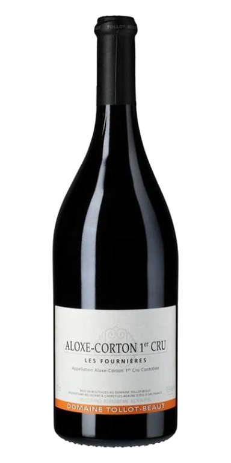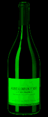PHOTO · W4Red / FranceAloxe-Corton – Tollot-BeautReference detailsSource: reviewed local photo archiveRepresentative release. Visible label years do not assign a vintage to your Winebrary. Physical height unverified.
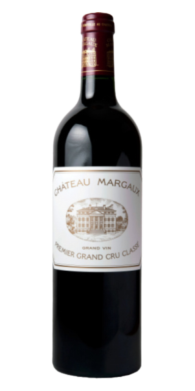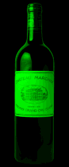PHOTO · W5Red / FranceChâteau Margaux Grand VinReference detailsSource: reviewed local photo archiveRepresentative release. Visible label years do not assign a vintage to your Winebrary. Physical height unverified.
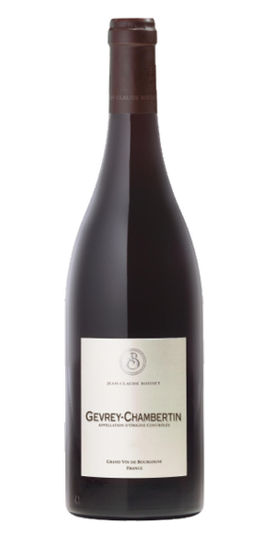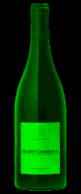PHOTO · W6Red / FranceGevrey-Chambertin – Jean-Claude BoissetReference detailsRechecked whole bottle and cuvee during export review.Source: reviewed local photo archiveRepresentative release. Visible label years do not assign a vintage to your Winebrary. Physical height unverified.
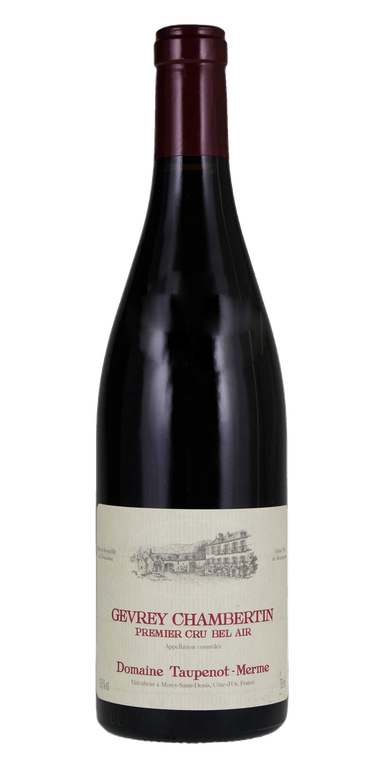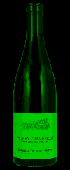PHOTO · W7Red / FranceGevrey-Chambertin – Taupenot-MermeReference detailsSource: reviewed local photo archiveRepresentative release. Visible label years do not assign a vintage to your Winebrary. Physical height unverified.
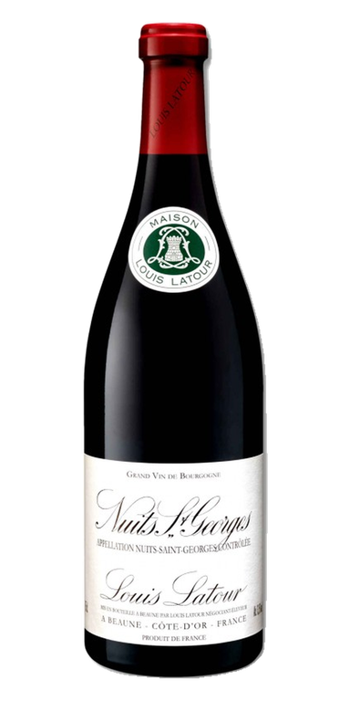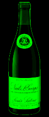PHOTO · W8Red / FranceNuits-Saint-Georges – Maison LatourReference detailsSource: reviewed local photo archiveRepresentative release. Visible label years do not assign a vintage to your Winebrary. Physical height unverified.
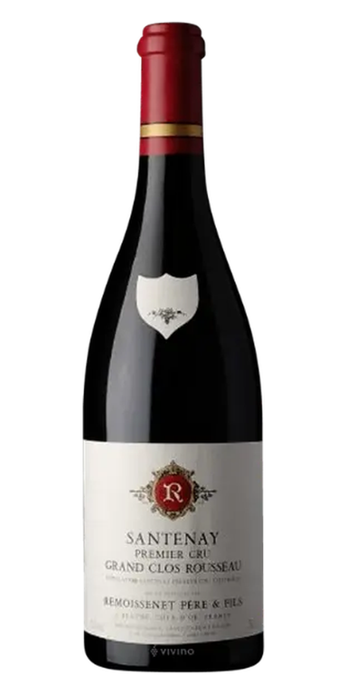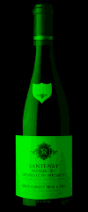PHOTO · W9Red / FranceSantenay 1er Cru "Grand Clos Rousseau" – RemoissenetReference detailsSource: reviewed local photo archiveRepresentative release. Visible label years do not assign a vintage to your Winebrary. Physical height unverified.
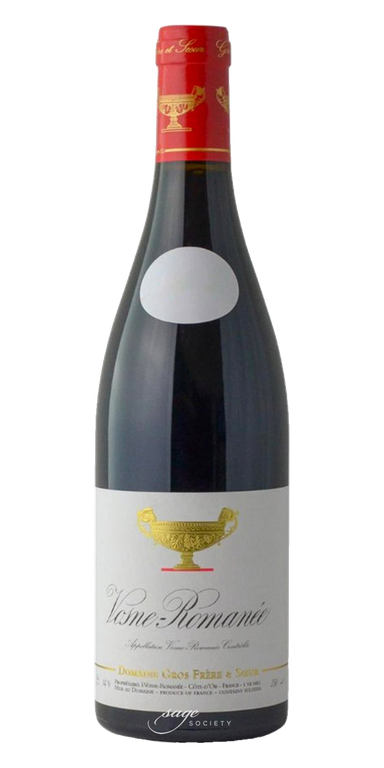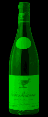PHOTO · W10Red / FranceVosne-Romanée 1er Cru "Les Chaumes" – Gros Frère et SœurReference detailsSource: reviewed local photo archiveRepresentative release. Visible label years do not assign a vintage to your Winebrary. Physical height unverified.
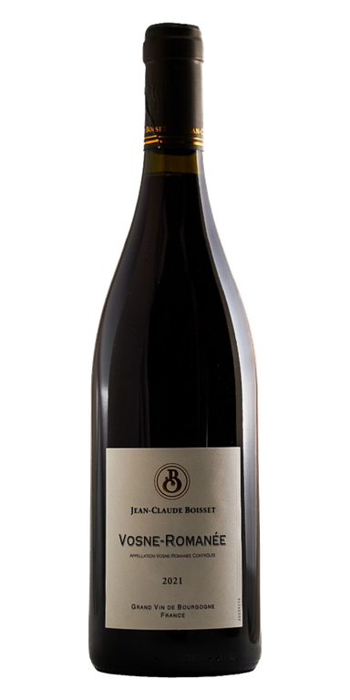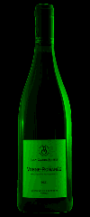PHOTO · W11Red / FranceVosne-Romanée – Jean-Claude BoissetReference detailsSource: reviewed local photo archiveRepresentative release. Visible label years do not assign a vintage to your Winebrary. Physical height unverified.
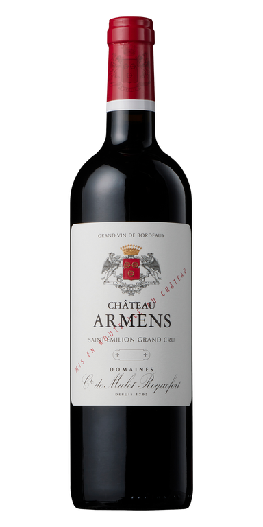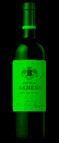PHOTO · W12Red / FranceChâteau Armens Grand CruReference detailsImporter product photograph; actual Chateau Armens label.Source reference ↗Representative release. Visible label years do not assign a vintage to your Winebrary. Physical height unverified.
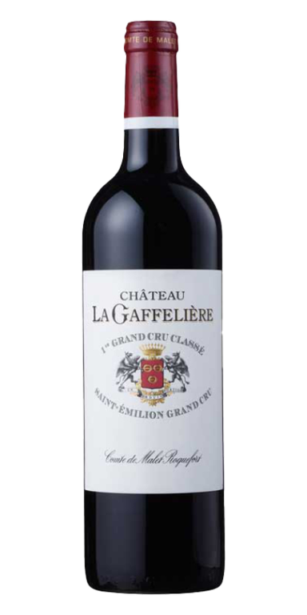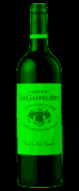PHOTO · W13Red / FranceChâteau La Gaffelière Premier Grand CruReference detailsManually selected after reviewing alternate labels and complete bottle silhouette.Source: reviewed local photo archiveRepresentative release. Visible label years do not assign a vintage to your Winebrary. Physical height unverified.
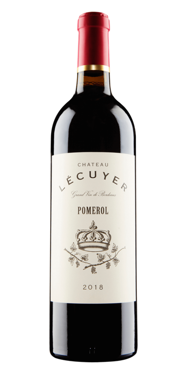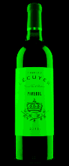PHOTO · W14Red / FranceChâteau l’EcuyerReference detailsSource: reviewed local photo archiveRepresentative release. Visible label years do not assign a vintage to your Winebrary. Physical height unverified.
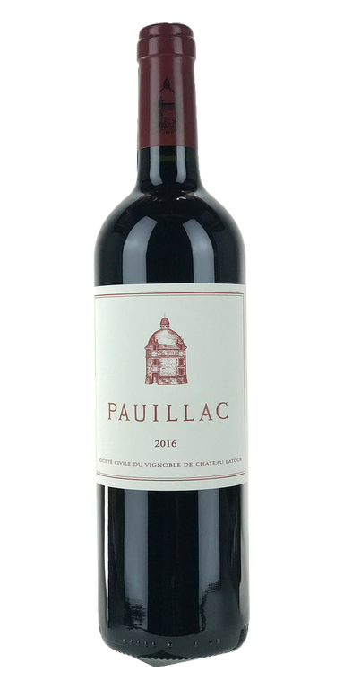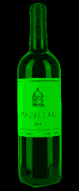PHOTO · W15Red / FranceLe Pauillac de Latour – Château LatourReference detailsManually selected after reviewing alternate labels and complete bottle silhouette.Source: reviewed local photo archiveRepresentative release. Visible label years do not assign a vintage to your Winebrary. Physical height unverified.
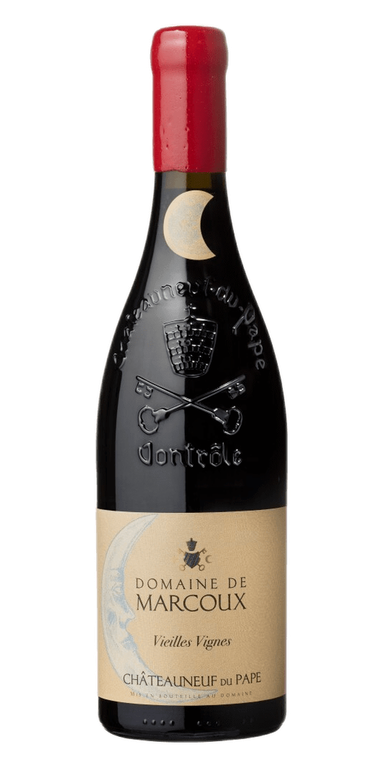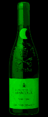PHOTO · W16Red / FranceChâteauneuf-du-Pape "Vieilles Vignes" – MarcouxReference detailsRechecked whole bottle and cuvee during export review.Source: reviewed local photo archiveRepresentative release. Visible label years do not assign a vintage to your Winebrary. Physical height unverified.
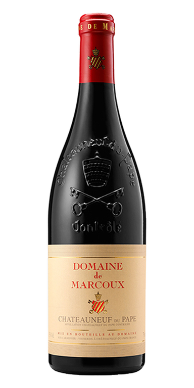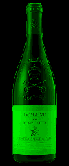PHOTO · W17Red / FranceChâteauneuf-du-Pape Rouge – Domaine de MarcouxReference detailsRechecked whole bottle and cuvee during export review.Source: reviewed local photo archiveRepresentative release. Visible label years do not assign a vintage to your Winebrary. Physical height unverified.
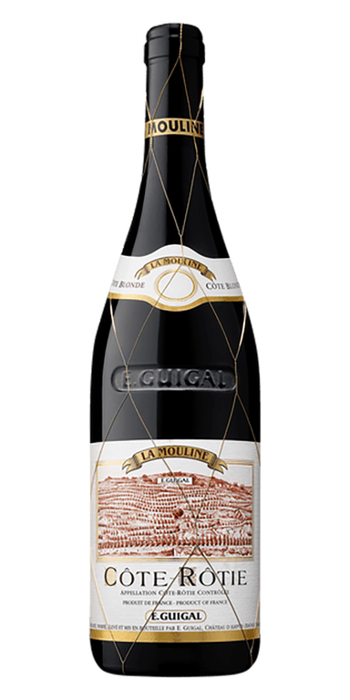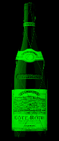PHOTO · W18Red / FranceCôte-Rôtie "La Mouline" – GuigalReference detailsSource: reviewed local photo archiveRepresentative release. Visible label years do not assign a vintage to your Winebrary. Physical height unverified.
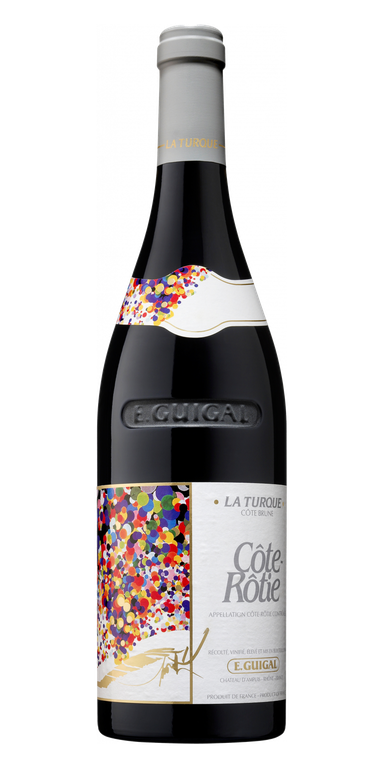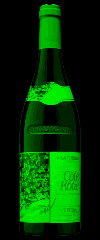PHOTO · W19Red / FranceCôte-Rôtie "La Turque" – GuigalReference detailsSource: reviewed local photo archiveRepresentative release. Visible label years do not assign a vintage to your Winebrary. Physical height unverified.
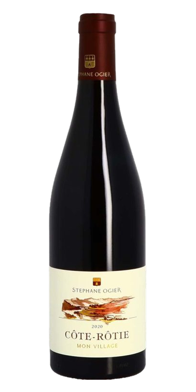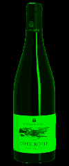PHOTO · W20Red / FranceCôte-Rôtie "Mon Village" – Stéphane OgierReference detailsManually selected after reviewing alternate labels and complete bottle silhouette.Source: reviewed local photo archiveRepresentative release. Visible label years do not assign a vintage to your Winebrary. Physical height unverified.
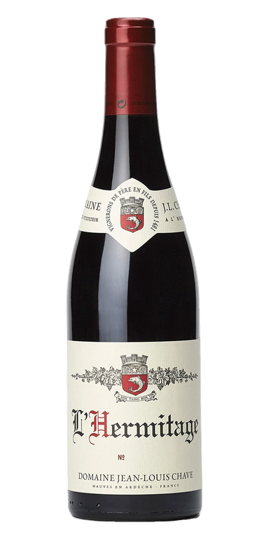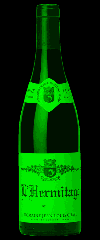PHOTO · W21Red / FranceHermitage – Jean-Louis ChaveReference detailsSource: reviewed local photo archiveRepresentative release. Visible label years do not assign a vintage to your Winebrary. Physical height unverified.
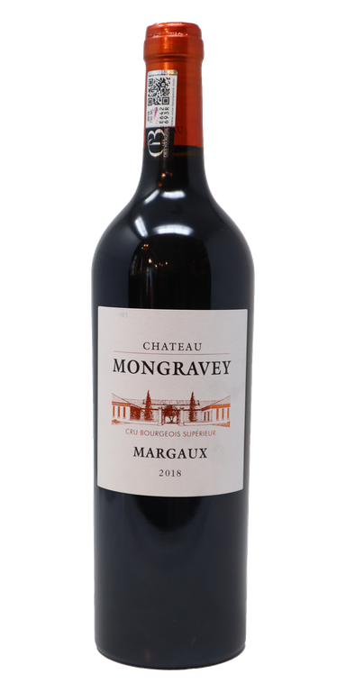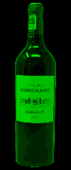PHOTO · W22Red / FranceChâteau Mongravey Cru BourgeoisReference detailsSource: reviewed local photo archiveRepresentative release. Visible label years do not assign a vintage to your Winebrary. Physical height unverified.
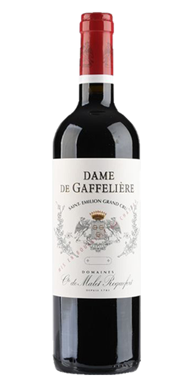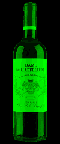PHOTO · W23Red / FranceDame de Gaffelière – Château La GaffelièreReference detailsProduct identity checked against photographed label and linked product/producer page.Source reference ↗Representative release. Visible label years do not assign a vintage to your Winebrary. Physical height unverified.
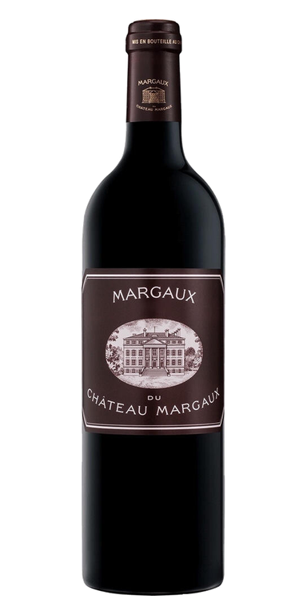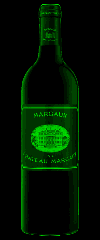PHOTO · W24Red / FranceMargaux du Château MargauxReference detailsSource: reviewed local photo archiveRepresentative release. Visible label years do not assign a vintage to your Winebrary. Physical height unverified.
PHOTO · W25Red / ItalyChianti Classico "Montebuoni" – Castello di AmaReference detailsSource: reviewed local photo archiveRepresentative release. Visible label years do not assign a vintage to your Winebrary. Physical height unverified.
PHOTO · W26Red / ItalyBarbaresco "San Giuliano" – Paolo ManzoneReference detailsSource: reviewed local photo archiveRepresentative release. Visible label years do not assign a vintage to your Winebrary. Physical height unverified.
PHOTO · W27Red / ItalyBarbaresco "Vanotu" – PelisseroReference detailsManually selected after reviewing alternate labels and complete bottle silhouette.Source: reviewed local photo archiveRepresentative release. Visible label years do not assign a vintage to your Winebrary. Physical height unverified.
PHOTO · W28Red / ItalyBarbaresco – GajaReference detailsSource: reviewed local photo archiveRepresentative release. Visible label years do not assign a vintage to your Winebrary. Physical height unverified.
PHOTO · W29Red / ItalyBarolo "Comune di Verduno" – Fratelli AlessandriaReference detailsSource: reviewed local photo archiveRepresentative release. Visible label years do not assign a vintage to your Winebrary. Physical height unverified.
PHOTO · W30Red / ItalyBarolo "Garretti" – La SpinettaReference detailsSource: reviewed local photo archiveRepresentative release. Visible label years do not assign a vintage to your Winebrary. Physical height unverified.
PHOTO · W31Red / ItalyBarolo "Gianetto" – Guido PorroReference detailsSource: reviewed local photo archiveRepresentative release. Visible label years do not assign a vintage to your Winebrary. Physical height unverified.
PHOTO · W32Red / ItalyBarolo "Serradenari" – Giulia NegriReference detailsSource: reviewed local photo archiveRepresentative release. Visible label years do not assign a vintage to your Winebrary. Physical height unverified.
PHOTO · W33Red / ItalyBarolo "Serralunga d’Alba" – Paolo ManzoneReference detailsSource: reviewed local photo archiveRepresentative release. Visible label years do not assign a vintage to your Winebrary. Physical height unverified.
PHOTO · W34Red / ItalyBarolo Riserva – Paolo ManzoneReference detailsSource: reviewed local photo archiveRepresentative release. Visible label years do not assign a vintage to your Winebrary. Physical height unverified.
PHOTO · W35Red / ItalyBarolo – BorgognoReference detailsSource: reviewed local photo archiveRepresentative release. Visible label years do not assign a vintage to your Winebrary. Physical height unverified.
PHOTO · W36Red / ItalyBrunello "Cerretalto" – Casanova di NeriReference detailsSource: reviewed local photo archiveRepresentative release. Visible label years do not assign a vintage to your Winebrary. Physical height unverified.
PHOTO · W37Red / ItalyBrunello "Tenuta Nuova" – Casanova di NeriReference detailsSource: reviewed local photo archiveRepresentative release. Visible label years do not assign a vintage to your Winebrary. Physical height unverified.
PHOTO · W38Red / ItalyBrunello di Montalcino 1.5L – Col di LamoReference detailsProducer-supplied magnum Limited Edition photograph. Exact physical height not supplied.Source reference ↗Representative release. Visible label years do not assign a vintage to your Winebrary. Physical height unverified.
PHOTO · W39Red / ItalyBrunello di Montalcino Riserva – Col di LamoReference detailsProduct identity checked against photographed label and linked product/producer page.Source reference ↗Representative release. Visible label years do not assign a vintage to your Winebrary. Physical height unverified.
PHOTO · W40Red / ItalyBrunello di Montalcino – AltesinoReference detailsSource: reviewed local photo archiveRepresentative release. Visible label years do not assign a vintage to your Winebrary. Physical height unverified.
PHOTO · W41Red / ItalyBrunello di Montalcino – Biondi-SantiReference detailsSource: reviewed local photo archiveRepresentative release. Visible label years do not assign a vintage to your Winebrary. Physical height unverified.
PHOTO · W42Red / ItalyBrunello di Montalcino – Canalicchio di SopraReference detailsSource: reviewed local photo archiveRepresentative release. Visible label years do not assign a vintage to your Winebrary. Physical height unverified.
PHOTO · W43Red / ItalyBrunello di Montalcino – Casanova di NeriReference detailsSource: reviewed local photo archiveRepresentative release. Visible label years do not assign a vintage to your Winebrary. Physical height unverified.
PHOTO · W44Red / ItalyBrunello di Montalcino – Castello RomitorioReference detailsSource: reviewed local photo archiveRepresentative release. Visible label years do not assign a vintage to your Winebrary. Physical height unverified.
PHOTO · W45Red / ItalyBrunello di Montalcino – Col di LamoReference detailsRechecked whole bottle and cuvee during export review.Source: reviewed local photo archiveRepresentative release. Visible label years do not assign a vintage to your Winebrary. Physical height unverified.
PHOTO · W46Red / ItalyBrunello di Montalcino – RidolfiReference detailsSource: reviewed local photo archiveRepresentative release. Visible label years do not assign a vintage to your Winebrary. Physical height unverified.
PHOTO · W47Red / ItalyChianti Classico Gran Selezione "San Lorenzo" – Castello di AmaReference detailsSource: reviewed local photo archiveRepresentative release. Visible label years do not assign a vintage to your Winebrary. Physical height unverified.
PHOTO · W48Red / ItalyFlaccianello della Pieve – FontodiReference detailsSource: reviewed local photo archiveRepresentative release. Visible label years do not assign a vintage to your Winebrary. Physical height unverified.
PHOTO · W49Red / ItalyPoggio Valente – Fattoria La PupilleReference detailsSource: reviewed local photo archiveRepresentative release. Visible label years do not assign a vintage to your Winebrary. Physical height unverified.
PHOTO · W50Red / ItalyTignanello – AntinoriReference detailsSource: reviewed local photo archiveRepresentative release. Visible label years do not assign a vintage to your Winebrary. Physical height unverified.
PHOTO · W51Red / ItalyHaiku – Castello di AmaReference detailsSource: reviewed local photo archiveRepresentative release. Visible label years do not assign a vintage to your Winebrary. Physical height unverified.
PHOTO · W52Red / ItalyIl Blu – BrancaiaReference detailsSource: reviewed local photo archiveRepresentative release. Visible label years do not assign a vintage to your Winebrary. Physical height unverified.
PHOTO · W53Red / ItalyIlatraia – BrancaiaReference detailsSource: reviewed local photo archiveRepresentative release. Visible label years do not assign a vintage to your Winebrary. Physical height unverified.
PHOTO · W54Red / ItalyModus – RuffinoReference detailsSource: reviewed local photo archiveRepresentative release. Visible label years do not assign a vintage to your Winebrary. Physical height unverified.
PHOTO · W55Red / ItalyCase Via – FontodiReference detailsSource: reviewed local photo archiveRepresentative release. Visible label years do not assign a vintage to your Winebrary. Physical height unverified.
PHOTO · W56Red / ItalyIl Fauno di Arcanum – Tenuta di ArcenoReference detailsSource: reviewed local photo archiveRepresentative release. Visible label years do not assign a vintage to your Winebrary. Physical height unverified.
PHOTO · W57Red / ItalyIrrosso – Casanova di NeriReference detailsSource: reviewed local photo archiveRepresentative release. Visible label years do not assign a vintage to your Winebrary. Physical height unverified.
PHOTO · W58Red / ItalyLe Volte dell’OrnellaiaReference detailsRechecked whole bottle and cuvee during export review.Source: reviewed local photo archiveRepresentative release. Visible label years do not assign a vintage to your Winebrary. Physical height unverified.
PHOTO · W59Red / ItalyMagnetic – Donne FittipaldiReference detailsProduct identity checked against photographed label and linked product/producer page.Source reference ↗Representative release. Visible label years do not assign a vintage to your Winebrary. Physical height unverified.
PHOTO · W60Red / ItalyNebbiolo "No Name" – BorgognoReference detailsSource: reviewed local photo archiveRepresentative release. Visible label years do not assign a vintage to your Winebrary. Physical height unverified.
PHOTO · W61Red / ItalyPater-Patriae Pinot Noir – Tenuta CafaggioloReference detailsVerified product/producer reference; photographed label and bottle inspected.Source reference ↗Representative release. Visible label years do not assign a vintage to your Winebrary. Physical height unverified.
PHOTO · W62Red / ItalyRosso di Montalcino "Giovanni Neri" – Casanova di NeriReference detailsSource: reviewed local photo archiveRepresentative release. Visible label years do not assign a vintage to your Winebrary. Physical height unverified.
PHOTO · W63Red / ItalyRosso di Montalcino – Canalicchio di SopraReference detailsSource: reviewed local photo archiveRepresentative release. Visible label years do not assign a vintage to your Winebrary. Physical height unverified.
PHOTO · W64Red / ItalyToscana Rosso – Il BorroReference detailsSource: reviewed local photo archiveRepresentative release. Visible label years do not assign a vintage to your Winebrary. Physical height unverified.
PHOTO · W65Red / ItalyTre – BrancaiaReference detailsRechecked whole bottle and cuvee during export review.Source: reviewed local photo archiveRepresentative release. Visible label years do not assign a vintage to your Winebrary. Physical height unverified.
PHOTO · W66Red / ItalyBarbera d’Alba "Fiorenza" – Paolo ManzoneReference detailsSource: reviewed local photo archiveRepresentative release. Visible label years do not assign a vintage to your Winebrary. Physical height unverified.
PHOTO · W67Red / ItalyBarbera d’Alba "Piani" – PelisseroReference detailsSource: reviewed local photo archiveRepresentative release. Visible label years do not assign a vintage to your Winebrary. Physical height unverified.
PHOTO · W68Red / ItalyChianti Classico Riserva – VolpaiaReference detailsManually selected after reviewing alternate labels and complete bottle silhouette.Source: reviewed local photo archiveRepresentative release. Visible label years do not assign a vintage to your Winebrary. Physical height unverified.
PHOTO · W69Red / LebanonIxsir Grand Reserve Red BlendReference detailsRechecked whole bottle and cuvee during export review.Source: reviewed local photo archiveRepresentative release. Visible label years do not assign a vintage to your Winebrary. Physical height unverified.
PHOTO · W70Red / LebanonMassaya Gold ReserveReference detailsSource: reviewed local photo archiveRepresentative release. Visible label years do not assign a vintage to your Winebrary. Physical height unverified.
PHOTO · W71Red / LebanonLove Letter – MerselReference detailsManually selected after reviewing alternate labels and complete bottle silhouette.Source: reviewed local photo archiveRepresentative release. Visible label years do not assign a vintage to your Winebrary. Physical height unverified.
PHOTO · W72Red / MexicoGabriel – Adobe GuadalupeReference detailsManually selected after reviewing alternate labels and complete bottle silhouette.Source: reviewed local photo archiveRepresentative release. Visible label years do not assign a vintage to your Winebrary. Physical height unverified.
PHOTO · W73Red / PortugalLíquen Alfrocheiro – João Cabral AlmeidaReference detailsSource: reviewed local photo archiveRepresentative release. Visible label years do not assign a vintage to your Winebrary. Physical height unverified.
PHOTO · W74Red / PortugalMaria Izabel Tinto – Quinta Maria IzabelReference detailsManually selected after reviewing alternate labels and complete bottle silhouette.Source: reviewed local photo archiveRepresentative release. Visible label years do not assign a vintage to your Winebrary. Physical height unverified.
PHOTO · W75Red / South AfricaPinot Noir – StormReference detailsSource: reviewed local photo archiveRepresentative release. Visible label years do not assign a vintage to your Winebrary. Physical height unverified.
PHOTO · W76Red / SpainRioja Reserva – MontañaReference detailsProduct identity checked against photographed label and linked product/producer page.Source reference ↗Representative release. Visible label years do not assign a vintage to your Winebrary. Physical height unverified.
PHOTO · W77Red / SpainRioja Reserva – ValencisoReference detailsSource: reviewed local photo archiveRepresentative release. Visible label years do not assign a vintage to your Winebrary. Physical height unverified.
PHOTO · W78Red / SpainCastillo Ygay Gran Reserva Especial – Marqués de MurrietaReference detailsSource: reviewed local photo archiveRepresentative release. Visible label years do not assign a vintage to your Winebrary. Physical height unverified.
PHOTO · W79Red / SpainImperial Gran Reserva – CVNEReference detailsSource: reviewed local photo archiveRepresentative release. Visible label years do not assign a vintage to your Winebrary. Physical height unverified.
PHOTO · W80Red / SpainValbuena 5 Años – Vega SiciliaReference detailsRechecked whole bottle and cuvee during export review.Source: reviewed local photo archiveRepresentative release. Visible label years do not assign a vintage to your Winebrary. Physical height unverified.
PHOTO · W81Red / SpainContador – Benjamín RomeoReference detailsSource: reviewed local photo archiveRepresentative release. Visible label years do not assign a vintage to your Winebrary. Physical height unverified.
PHOTO · W82Red / SpainMalleolus de Sanchomartín – Emilio MoroReference detailsSource: reviewed local photo archiveRepresentative release. Visible label years do not assign a vintage to your Winebrary. Physical height unverified.
PHOTO · W83Red / SpainVeraton – Bodegas Alto MoncayoReference detailsSource: reviewed local photo archiveRepresentative release. Visible label years do not assign a vintage to your Winebrary. Physical height unverified.
PHOTO · W84Red / Spain10 Años Después – ValencisoReference detailsSource: reviewed local photo archiveRepresentative release. Visible label years do not assign a vintage to your Winebrary. Physical height unverified.
PHOTO · W85Red / United StatesPinot Noir "Botanica" – Antica TerraReference detailsManually selected after reviewing alternate labels and complete bottle silhouette.Source: reviewed local photo archiveRepresentative release. Visible label years do not assign a vintage to your Winebrary. Physical height unverified.
PHOTO · W86Red / United StatesPinot Noir "Plow" – Lingua FrancaReference detailsSource: reviewed local photo archiveRepresentative release. Visible label years do not assign a vintage to your Winebrary. Physical height unverified.
PHOTO · W87Red / United StatesPinot Noir – Bergström (Le Pré du Col)Reference detailsSource: reviewed local photo archiveRepresentative release. Visible label years do not assign a vintage to your Winebrary. Physical height unverified.
PHOTO · W88Red / United StatesPinot Noir – Domaine DrouhinReference detailsSource: reviewed local photo archiveRepresentative release. Visible label years do not assign a vintage to your Winebrary. Physical height unverified.
PHOTO · W89Red / United StatesPinot Noir – Hanzell EstateReference detailsSource: reviewed local photo archiveRepresentative release. Visible label years do not assign a vintage to your Winebrary. Physical height unverified.
PHOTO · W90Red / United StatesPinot Noir – Joseph Phelps (Freestone)Reference detailsSource: reviewed local photo archiveRepresentative release. Visible label years do not assign a vintage to your Winebrary. Physical height unverified.
PHOTO · W91Red / United StatesPinot Noir – Keller EstateReference detailsSource: reviewed local photo archiveRepresentative release. Visible label years do not assign a vintage to your Winebrary. Physical height unverified.
PHOTO · W92Red / United StatesPinot Noir – Paul HobbsReference detailsSource: reviewed local photo archiveRepresentative release. Visible label years do not assign a vintage to your Winebrary. Physical height unverified.
PHOTO · W93Red / United StatesPinot Noir – St. Innocent (Momtazi)Reference detailsSource: reviewed local photo archiveRepresentative release. Visible label years do not assign a vintage to your Winebrary. Physical height unverified.
PHOTO · W94Red / United StatesSea Smoke "Sea Spray"Reference detailsSource: reviewed local photo archiveRepresentative release. Visible label years do not assign a vintage to your Winebrary. Physical height unverified.
PHOTO · W95Red / United StatesCain Cuvée "NV14"Reference detailsExact NV14 release reference selected; non-vintage blend code remains NV14.Source reference ↗Representative release. Visible label years do not assign a vintage to your Winebrary. Physical height unverified.
PHOTO · W96Red / United StatesOpus OneReference detailsSource: reviewed local photo archiveRepresentative release. Visible label years do not assign a vintage to your Winebrary. Physical height unverified.
PHOTO · W97Red / United StatesThe Mascot – Harlan FamilyReference detailsManually selected after reviewing alternate labels and complete bottle silhouette.Source: reviewed local photo archiveRepresentative release. Visible label years do not assign a vintage to your Winebrary. Physical height unverified.
PHOTO · W98Red / United StatesCabernet Sauvignon "Brother’s Vineyard" – SnowdenReference detailsSource: reviewed local photo archiveRepresentative release. Visible label years do not assign a vintage to your Winebrary. Physical height unverified.
PHOTO · W99Red / United StatesCabernet Sauvignon "Highest Beauty" – To KalonReference detailsSource: reviewed local photo archiveRepresentative release. Visible label years do not assign a vintage to your Winebrary. Physical height unverified.
PHOTO · W100Red / United StatesCabernet Sauvignon "Palermo" – Orin SwiftReference detailsSource: reviewed local photo archiveRepresentative release. Visible label years do not assign a vintage to your Winebrary. Physical height unverified.
PHOTO · W101Red / United StatesCabernet Sauvignon – CaymusReference detailsSource: reviewed local photo archiveRepresentative release. Visible label years do not assign a vintage to your Winebrary. Physical height unverified.
PHOTO · W102Red / United StatesCabernet Sauvignon – Chimney RockReference detailsSource: reviewed local photo archiveRepresentative release. Visible label years do not assign a vintage to your Winebrary. Physical height unverified.
PHOTO · W103Red / United StatesCabernet Sauvignon – FaustReference detailsSource: reviewed local photo archiveRepresentative release. Visible label years do not assign a vintage to your Winebrary. Physical height unverified.
PHOTO · W104Red / United StatesCabernet Sauvignon – Joseph PhelpsReference detailsSource: reviewed local photo archiveRepresentative release. Visible label years do not assign a vintage to your Winebrary. Physical height unverified.
Photo pendingIDENTITY PENDINGRed / United StatesCabernet Sauvignon – PahlmeyerReference detailsCatalog Cabernet Sauvignon is ambiguous: Pahlmeyer Proprietary Red versus Jayson Cabernet Sauvignon. Confirm exact label before export.Source: reviewed local photo archiveRepresentative release. Visible label years do not assign a vintage to your Winebrary. Physical height unverified.
PHOTO · W106Red / United StatesCabernet Sauvignon – Sinegal EstateReference detailsSource: reviewed local photo archiveRepresentative release. Visible label years do not assign a vintage to your Winebrary. Physical height unverified.
PHOTO · W107Red / United StatesDarius II – DarioushReference detailsSource: reviewed local photo archiveRepresentative release. Visible label years do not assign a vintage to your Winebrary. Physical height unverified.
PHOTO · W108Red / United StatesDouble Diamond Cabernet – SchraderReference detailsSource: reviewed local photo archiveRepresentative release. Visible label years do not assign a vintage to your Winebrary. Physical height unverified.
PHOTO · W109Red / United StatesIsosceles – JustinReference detailsSource: reviewed local photo archiveRepresentative release. Visible label years do not assign a vintage to your Winebrary. Physical height unverified.
PHOTO · W110Red / United StatesMadrona Ranch – AbreuReference detailsSource: reviewed local photo archiveRepresentative release. Visible label years do not assign a vintage to your Winebrary. Physical height unverified.
PHOTO · W111Red / United StatesPapillon – Orin SwiftReference detailsSource: reviewed local photo archiveRepresentative release. Visible label years do not assign a vintage to your Winebrary. Physical height unverified.
PHOTO · W112Red / United StatesSyrah – Donnachadh EstateReference detailsManually selected after reviewing alternate labels and complete bottle silhouette.Source: reviewed local photo archiveRepresentative release. Visible label years do not assign a vintage to your Winebrary. Physical height unverified.
PHOTO · W113Red / United StatesMerlot – Freemark AbbeyReference detailsSource: reviewed local photo archiveRepresentative release. Visible label years do not assign a vintage to your Winebrary. Physical height unverified.
PHOTO · W114Red / United StatesMerlot – Grgich HillsReference detailsSource: reviewed local photo archiveRepresentative release. Visible label years do not assign a vintage to your Winebrary. Physical height unverified.
PHOTO · W115Red / United StatesPinot Noir – ChehalemReference detailsSource: reviewed local photo archiveRepresentative release. Visible label years do not assign a vintage to your Winebrary. Physical height unverified.
PHOTO · W116Red / United StatesCabernet Sauvignon – Silver OakReference detailsSource: reviewed local photo archiveRepresentative release. Visible label years do not assign a vintage to your Winebrary. Physical height unverified.
PHOTO · W117White / AustriaGrüner Veltliner – Ebner-EbenauerReference detailsManually selected after reviewing alternate labels and complete bottle silhouette.Source: reviewed local photo archiveRepresentative release. Visible label years do not assign a vintage to your Winebrary. Physical height unverified.
PHOTO · W118White / FranceCorton-Charlemagne Grand Cru – Louis LatourReference detailsSource: reviewed local photo archiveRepresentative release. Visible label years do not assign a vintage to your Winebrary. Physical height unverified.
PHOTO · W119White / FranceMeursault "Le Limozin" – Xavier MonnotReference detailsSource: reviewed local photo archiveRepresentative release. Visible label years do not assign a vintage to your Winebrary. Physical height unverified.
PHOTO · W120White / FrancePouilly-Fuissé – Louis LatourReference detailsSource: reviewed local photo archiveRepresentative release. Visible label years do not assign a vintage to your Winebrary. Physical height unverified.
PHOTO · W121White / FranceY Ygrec – Château d’YquemReference detailsSource: reviewed local photo archiveRepresentative release. Visible label years do not assign a vintage to your Winebrary. Physical height unverified.
PHOTO · W122White / FranceLes Carmes de Rieussec – Château RieussecReference detailsVerified product/producer reference; photographed label and bottle inspected.Source reference ↗Representative release. Visible label years do not assign a vintage to your Winebrary. Physical height unverified.
PHOTO · W123White / FranceChablis 1er Cru "Fourchaume" – MalandesReference detailsSource: reviewed local photo archiveRepresentative release. Visible label years do not assign a vintage to your Winebrary. Physical height unverified.
PHOTO · W124White / FranceChablis 1er Cru "Les Fourchaumes" – l’EnclosReference detailsSource: reviewed local photo archiveRepresentative release. Visible label years do not assign a vintage to your Winebrary. Physical height unverified.
PHOTO · W125White / FranceChablis – William FèvreReference detailsSource: reviewed local photo archiveRepresentative release. Visible label years do not assign a vintage to your Winebrary. Physical height unverified.
PHOTO · W126White / FranceSancerre "Chavignol" – Yves MartinReference detailsSource: reviewed local photo archiveRepresentative release. Visible label years do not assign a vintage to your Winebrary. Physical height unverified.
PHOTO · W127White / FranceSancerre "Côte des Monts Damnés" – Hubert BrochardReference detailsProduct identity checked against photographed label and linked product/producer page.Source reference ↗Representative release. Visible label years do not assign a vintage to your Winebrary. Physical height unverified.
PHOTO · W128White / FranceSancerre "La Chatellenie" – Joseph MellotReference detailsSource: reviewed local photo archiveRepresentative release. Visible label years do not assign a vintage to your Winebrary. Physical height unverified.
PHOTO · W129White / FranceSancerre "Le Mont" – Foucher LebrunReference detailsSource: reviewed local photo archiveRepresentative release. Visible label years do not assign a vintage to your Winebrary. Physical height unverified.
PHOTO · W130White / GermanyRiesling "Forster Kirchenstück" GG – Von WinningReference detailsSource: reviewed local photo archiveRepresentative release. Visible label years do not assign a vintage to your Winebrary. Physical height unverified.
PHOTO · W131White / GermanyRiesling – DönnhoffReference detailsManually selected after reviewing alternate labels and complete bottle silhouette.Source: reviewed local photo archiveRepresentative release. Visible label years do not assign a vintage to your Winebrary. Physical height unverified.
PHOTO · W132White / GreeceAssyrtiko "Santorini" – SigalasReference detailsSource: reviewed local photo archiveRepresentative release. Visible label years do not assign a vintage to your Winebrary. Physical height unverified.
PHOTO · W133White / ItalyGavi del Comune di Gavi – Villa SparinaReference detailsSource: reviewed local photo archiveRepresentative release. Visible label years do not assign a vintage to your Winebrary. Physical height unverified.
PHOTO · W134White / ItalyPecorino "Cortalto" – Cerulli SpinozziReference detailsSource: reviewed local photo archiveRepresentative release. Visible label years do not assign a vintage to your Winebrary. Physical height unverified.
PHOTO · W135White / ItalyPinot Grigio "Porer" – Alois LagederReference detailsSource: reviewed local photo archiveRepresentative release. Visible label years do not assign a vintage to your Winebrary. Physical height unverified.
PHOTO · W136White / ItalyPinot Grigio – Elena WalchReference detailsSource: reviewed local photo archiveRepresentative release. Visible label years do not assign a vintage to your Winebrary. Physical height unverified.
PHOTO · W137White / ItalyRoero Arneis "Reysù" – Paolo ManzoneReference detailsSource: reviewed local photo archiveRepresentative release. Visible label years do not assign a vintage to your Winebrary. Physical height unverified.
PHOTO · W138White / ItalyTrebbiano d’Abruzzo – TiberioReference detailsSource: reviewed local photo archiveRepresentative release. Visible label years do not assign a vintage to your Winebrary. Physical height unverified.
PHOTO · W139White / ItalyVermentino "Prelius" – VolpaiaReference detailsSource: reviewed local photo archiveRepresentative release. Visible label years do not assign a vintage to your Winebrary. Physical height unverified.
PHOTO · W140White / ItalyGrillo Riserva "Kheire" – Gorghi TondiReference detailsSource: reviewed local photo archiveRepresentative release. Visible label years do not assign a vintage to your Winebrary. Physical height unverified.
PHOTO · W141White / ItalySP68 Bianco – Arianna OcchipintiReference detailsSource: reviewed local photo archiveRepresentative release. Visible label years do not assign a vintage to your Winebrary. Physical height unverified.
PHOTO · W142White / ItalyTrebbiano d’Abruzzo – Emidio PepeReference detailsSource: reviewed local photo archiveRepresentative release. Visible label years do not assign a vintage to your Winebrary. Physical height unverified.
PHOTO · W143White / LebanonReserve Ammiq BlancReference detailsVerified product/producer reference; photographed label and bottle inspected.Source reference ↗Representative release. Visible label years do not assign a vintage to your Winebrary. Physical height unverified.
PHOTO · W144White / LebanonAltitudes Blanc – IxsirReference detailsSource: reviewed local photo archiveRepresentative release. Visible label years do not assign a vintage to your Winebrary. Physical height unverified.
PHOTO · W145White / New ZealandSauvignon Blanc "Te Muna" – Craggy RangeReference detailsSource: reviewed local photo archiveRepresentative release. Visible label years do not assign a vintage to your Winebrary. Physical height unverified.
PHOTO · W146White / PortugalEncruzado – João Cabral AlmeidaReference detailsSource: reviewed local photo archiveRepresentative release. Visible label years do not assign a vintage to your Winebrary. Physical height unverified.
PHOTO · W147White / South AfricaKalmoesfontein White Blend – A.A. BadenhorstReference detailsManually selected after reviewing alternate labels and complete bottle silhouette.Source: reviewed local photo archiveRepresentative release. Visible label years do not assign a vintage to your Winebrary. Physical height unverified.
PHOTO · W148White / SpainAlbariño – EidosReference detailsSource: reviewed local photo archiveRepresentative release. Visible label years do not assign a vintage to your Winebrary. Physical height unverified.
PHOTO · W149White / SpainAlbariño – Mar de FradesReference detailsSource: reviewed local photo archiveRepresentative release. Visible label years do not assign a vintage to your Winebrary. Physical height unverified.
PHOTO · W150White / SpainO Rosal – Terras GaudaReference detailsSource: reviewed local photo archiveRepresentative release. Visible label years do not assign a vintage to your Winebrary. Physical height unverified.
PHOTO · W151White / United StatesChardonnay "MFN" – BookerReference detailsSource: reviewed local photo archiveRepresentative release. Visible label years do not assign a vintage to your Winebrary. Physical height unverified.
PHOTO · W152White / United StatesChardonnay "Mannequin" – Orin SwiftReference detailsSource: reviewed local photo archiveRepresentative release. Visible label years do not assign a vintage to your Winebrary. Physical height unverified.
PHOTO · W153White / United StatesChardonnay – Cakebread CellarsReference detailsSource: reviewed local photo archiveRepresentative release. Visible label years do not assign a vintage to your Winebrary. Physical height unverified.
PHOTO · W154White / United StatesChardonnay – Château MontelenaReference detailsSource: reviewed local photo archiveRepresentative release. Visible label years do not assign a vintage to your Winebrary. Physical height unverified.
PHOTO · W155White / United StatesChardonnay – DarioushReference detailsSource: reviewed local photo archiveRepresentative release. Visible label years do not assign a vintage to your Winebrary. Physical height unverified.
PHOTO · W156White / United StatesChardonnay – Grgich HillsReference detailsSource: reviewed local photo archiveRepresentative release. Visible label years do not assign a vintage to your Winebrary. Physical height unverified.
PHOTO · W157White / United StatesChardonnay – SchugReference detailsSource: reviewed local photo archiveRepresentative release. Visible label years do not assign a vintage to your Winebrary. Physical height unverified.
PHOTO · W158White / United StatesSauvignon Blanc "Double Diamond" – SchraderReference detailsSource: reviewed local photo archiveRepresentative release. Visible label years do not assign a vintage to your Winebrary. Physical height unverified.
PHOTO · W159White / United StatesSauvignon Blanc – Arnot-RobertsReference detailsSource: reviewed local photo archiveRepresentative release. Visible label years do not assign a vintage to your Winebrary. Physical height unverified.
PHOTO · W160White / United StatesSauvignon Blanc – Sinegal EstateReference detailsSource: reviewed local photo archiveRepresentative release. Visible label years do not assign a vintage to your Winebrary. Physical height unverified.
PHOTO · W161White / United StatesViognier – Penner-AshReference detailsSource: reviewed local photo archiveRepresentative release. Visible label years do not assign a vintage to your Winebrary. Physical height unverified.
PHOTO · W162White / United StatesPinot Gris "Daisy" – Antiquum FarmReference detailsSource: reviewed local photo archiveRepresentative release. Visible label years do not assign a vintage to your Winebrary. Physical height unverified.
PHOTO · W163Sparkling / FranceDelamotte Blanc de BlancsReference detailsSource: reviewed local photo archiveRepresentative release. Visible label years do not assign a vintage to your Winebrary. Physical height unverified.
PHOTO · W164Sparkling / FranceDom PérignonReference detailsSource: reviewed local photo archiveRepresentative release. Visible label years do not assign a vintage to your Winebrary. Physical height unverified.
PHOTO · W165Sparkling / FranceDom Ruinart Blanc de BlancsReference detailsSource: reviewed local photo archiveRepresentative release. Visible label years do not assign a vintage to your Winebrary. Physical height unverified.
PHOTO · W166Sparkling / FranceJ. Lassalle "Préférence" 1er CruReference detailsSource: reviewed local photo archiveRepresentative release. Visible label years do not assign a vintage to your Winebrary. Physical height unverified.
PHOTO · W167Sparkling / FranceKrug "Grande Cuvée" 170ème ÉditionReference detailsSource: reviewed local photo archiveRepresentative release. Visible label years do not assign a vintage to your Winebrary. Physical height unverified.
PHOTO · W168Sparkling / FranceLaurent-Perrier "La Cuvée" BrutReference detailsSource: reviewed local photo archiveRepresentative release. Visible label years do not assign a vintage to your Winebrary. Physical height unverified.
PHOTO · W169Sparkling / FranceLouis Roederer "Cristal"Reference detailsManually selected after reviewing alternate labels and complete bottle silhouette.Source: reviewed local photo archiveRepresentative release. Visible label years do not assign a vintage to your Winebrary. Physical height unverified.
PHOTO · W170Sparkling / FranceMichel Mailliard "Cuvée Grégory" 1er Cru BrutReference detailsSource: reviewed local photo archiveRepresentative release. Visible label years do not assign a vintage to your Winebrary. Physical height unverified.
PHOTO · W171Sparkling / FranceMoussé Fils "Les Fortes Terres"Reference detailsSource: reviewed local photo archiveRepresentative release. Visible label years do not assign a vintage to your Winebrary. Physical height unverified.
PHOTO · W172Sparkling / FranceMoët & Chandon "Impérial" BrutReference detailsSource: reviewed local photo archiveRepresentative release. Visible label years do not assign a vintage to your Winebrary. Physical height unverified.
PHOTO · W173Sparkling / FrancePerrier-Jouët "Belle Époque"Reference detailsSource: reviewed local photo archiveRepresentative release. Visible label years do not assign a vintage to your Winebrary. Physical height unverified.
PHOTO · W174Sparkling / FrancePerrier-Jouët Blanc de BlancsReference detailsSource: reviewed local photo archiveRepresentative release. Visible label years do not assign a vintage to your Winebrary. Physical height unverified.
PHOTO · W175Sparkling / FrancePerrier-Jouët Grand BrutReference detailsSource: reviewed local photo archiveRepresentative release. Visible label years do not assign a vintage to your Winebrary. Physical height unverified.
PHOTO · W176Sparkling / FrancePierre Péters Cuvée de Réserve BdBReference detailsSource: reviewed local photo archiveRepresentative release. Visible label years do not assign a vintage to your Winebrary. Physical height unverified.
PHOTO · W177Sparkling / FrancePiper-Heidsieck "Rare"Reference detailsSource: reviewed local photo archiveRepresentative release. Visible label years do not assign a vintage to your Winebrary. Physical height unverified.
PHOTO · W178Sparkling / FrancePol Roger "Sir Winston Churchill"Reference detailsSource: reviewed local photo archiveRepresentative release. Visible label years do not assign a vintage to your Winebrary. Physical height unverified.
PHOTO · W179Sparkling / FranceRuinart Blanc de BlancsReference detailsSource: reviewed local photo archiveRepresentative release. Visible label years do not assign a vintage to your Winebrary. Physical height unverified.
PHOTO · W180Sparkling / FranceVeuve Clicquot "Yellow Label" BrutReference detailsSource: reviewed local photo archiveRepresentative release. Visible label years do not assign a vintage to your Winebrary. Physical height unverified.
PHOTO · W181Sparkling / FranceBillecart-Salmon Brut RoséReference detailsSource: reviewed local photo archiveRepresentative release. Visible label years do not assign a vintage to your Winebrary. Physical height unverified.
PHOTO · W182Sparkling / FranceBrice "Heritage" Brut RoséReference detailsSource: reviewed local photo archiveRepresentative release. Visible label years do not assign a vintage to your Winebrary. Physical height unverified.
PHOTO · W183Sparkling / FranceCharles Heidsieck Réserve Brut RoséReference detailsSource: reviewed local photo archiveRepresentative release. Visible label years do not assign a vintage to your Winebrary. Physical height unverified.
PHOTO · W184Sparkling / FranceG.H. Mumm "Grand Cordon" Brut RoséReference detailsSource: reviewed local photo archiveRepresentative release. Visible label years do not assign a vintage to your Winebrary. Physical height unverified.
PHOTO · W185Sparkling / FranceGaston Chiquet Rosé 1er CruReference detailsSource: reviewed local photo archiveRepresentative release. Visible label years do not assign a vintage to your Winebrary. Physical height unverified.
PHOTO · W186Sparkling / FranceHenriot Brut RoséReference detailsSource: reviewed local photo archiveRepresentative release. Visible label years do not assign a vintage to your Winebrary. Physical height unverified.
PHOTO · W187Sparkling / FranceLaurent-Perrier "Cuvée Rosé"Reference detailsSource: reviewed local photo archiveRepresentative release. Visible label years do not assign a vintage to your Winebrary. Physical height unverified.
PHOTO · W188Sparkling / FranceLouis Roederer "Cristal" RoséReference detailsWhole Cristal Rose bottle isolated beside its original box; pedestal-free reference selected.Source: reviewed local photo archiveRepresentative release. Visible label years do not assign a vintage to your Winebrary. Physical height unverified.
PHOTO · W189Sparkling / FrancePerrier-Jouët "Blason" RoséReference detailsSource: reviewed local photo archiveRepresentative release. Visible label years do not assign a vintage to your Winebrary. Physical height unverified.
PHOTO · W190Sparkling / FrancePommery "Cuvée Louise" RoséReference detailsVerified product/producer reference; photographed label and bottle inspected.Source reference ↗Representative release. Visible label years do not assign a vintage to your Winebrary. Physical height unverified.
PHOTO · W191Sparkling / FranceDosnon "Récolte Brute" Extra BrutReference detailsSource: reviewed local photo archiveRepresentative release. Visible label years do not assign a vintage to your Winebrary. Physical height unverified.
PHOTO · W192Sparkling / ItalyFerrari Trento Trentodoc BrutReference detailsSource: reviewed local photo archiveRepresentative release. Visible label years do not assign a vintage to your Winebrary. Physical height unverified.
PHOTO · W193Sparkling / ItalyProsecco "Rustico" – Nino FrancoReference detailsSource: reviewed local photo archiveRepresentative release. Visible label years do not assign a vintage to your Winebrary. Physical height unverified.
PHOTO · W194Sparkling / ItalyFerrari Trento Trentodoc Brut RoséReference detailsSource: reviewed local photo archiveRepresentative release. Visible label years do not assign a vintage to your Winebrary. Physical height unverified.
PHOTO · W195Sparkling / ItalyMetodo Classico Brut Rosé – Terrazze dell’EtnaReference detailsSource: reviewed local photo archiveRepresentative release. Visible label years do not assign a vintage to your Winebrary. Physical height unverified.
PHOTO · W196Sparkling / ItalyMoscato d’Asti "Bricco Quaglia" – La SpinettaReference detailsSource: reviewed local photo archiveRepresentative release. Visible label years do not assign a vintage to your Winebrary. Physical height unverified.
PHOTO · W197Sparkling / LebanonMersel "Leb Nat" Pet-Nat RoséReference detailsSource: reviewed local photo archiveRepresentative release. Visible label years do not assign a vintage to your Winebrary. Physical height unverified.
PHOTO · W198Rose / FranceChâteau Romassan RoséReference detailsRechecked whole bottle and cuvee during export review.Source: reviewed local photo archiveRepresentative release. Visible label years do not assign a vintage to your Winebrary. Physical height unverified.
PHOTO · W199Rose / FranceChinon Rosé – Charles JoguetReference detailsSource: reviewed local photo archiveRepresentative release. Visible label years do not assign a vintage to your Winebrary. Physical height unverified.
PHOTO · W200Rose / FranceWhispering Angel – Château d'EsclansReference detailsSource: reviewed local photo archiveRepresentative release. Visible label years do not assign a vintage to your Winebrary. Physical height unverified.
PHOTO · W201Rose / France“Clos Beylesse” Rosé – Domaine de l'Abbaye (1.5L)Reference detailsVerified product/producer reference; photographed label and bottle inspected.Source reference ↗Representative release. Visible label years do not assign a vintage to your Winebrary. Physical height unverified.
PHOTO · W202Rose / France“Fantastique” Rosé – Château Sainte MargueriteReference detailsSource: reviewed local photo archiveRepresentative release. Visible label years do not assign a vintage to your Winebrary. Physical height unverified.
PHOTO · W203Rose / France“Prestige” Rosé – MinutyReference detailsRechecked whole bottle and cuvee during export review.Source: reviewed local photo archiveRepresentative release. Visible label years do not assign a vintage to your Winebrary. Physical height unverified.
PHOTO · W204Rose / France“Clos du Temple” Rosé – Gérard BertrandReference detailsSource: reviewed local photo archiveRepresentative release. Visible label years do not assign a vintage to your Winebrary. Physical height unverified.
PHOTO · W205Rose / France“Garrus” Rosé – Château d'EsclansReference detailsSource: reviewed local photo archiveRepresentative release. Visible label years do not assign a vintage to your Winebrary. Physical height unverified.
PHOTO · W206Rose / Lebanon“Grand Reserve” Rosé – IxsirReference detailsProduct identity checked against photographed label and linked product/producer page.Source reference ↗Representative release. Visible label years do not assign a vintage to your Winebrary. Physical height unverified.
PHOTO · W207Rose / United StatesWine Creek Ranch Rosé – QuiviraReference detailsSource: reviewed local photo archiveRepresentative release. Visible label years do not assign a vintage to your Winebrary. Physical height unverified.
PHOTO · W208Orange / France“Orange Tacsum” – La Mariota (Orange Wine)Reference detailsSource: reviewed local photo archiveRepresentative release. Visible label years do not assign a vintage to your Winebrary. Physical height unverified.
PHOTO · W209Dessert / CyprusCommandaria – TsiakkasReference detailsSource: reviewed local photo archiveRepresentative release. Visible label years do not assign a vintage to your Winebrary. Physical height unverified.
PHOTO · W210Dessert / ItalyRecioto della Valpolicella – Dal Forno RomanoReference detailsSource: reviewed local photo archiveRepresentative release. Visible label years do not assign a vintage to your Winebrary. Physical height unverified.
PHOTO · W211Dessert / ItalyRecioto di Soave "I Capitelli" – AnselmiReference detailsSource: reviewed local photo archiveRepresentative release. Visible label years do not assign a vintage to your Winebrary. Physical height unverified.
PHOTO · W212Dessert / ItalyVin Santo "Il Decano" – MontepaldiReference detailsVerified product/producer reference; photographed label and bottle inspected.Source reference ↗Representative release. Visible label years do not assign a vintage to your Winebrary. Physical height unverified.
PHOTO · W213Dessert / PortugalTawny Port "Otima" – Warre’sReference detailsSource: reviewed local photo archiveRepresentative release. Visible label years do not assign a vintage to your Winebrary. Physical height unverified.
PHOTO · W214Dessert / PortugalTawny Port – Quinta do NovalReference detailsSource: reviewed local photo archiveRepresentative release. Visible label years do not assign a vintage to your Winebrary. Physical height unverified.